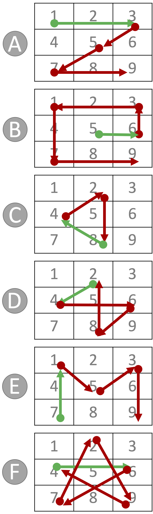
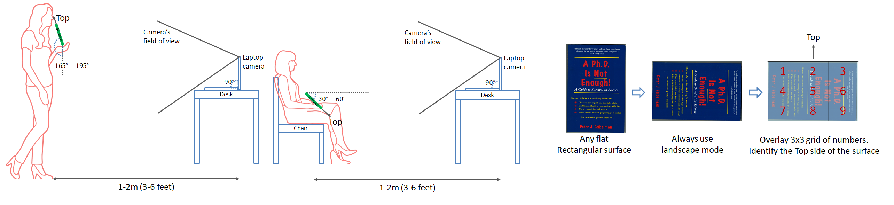

Microphone+Camera
default
Start Recording
Pause
Stop
Play Recording
Save To Disk
Upload Files
Default resolutions
Default framerates
Default bitrates
Please use the video recorder tool on Google Chrome.

Please record the video by drawing gestures on 10 objects each in two settings: Sitting and Standing.
For instructions, Please click on the link:
Data Collection Instructions
.